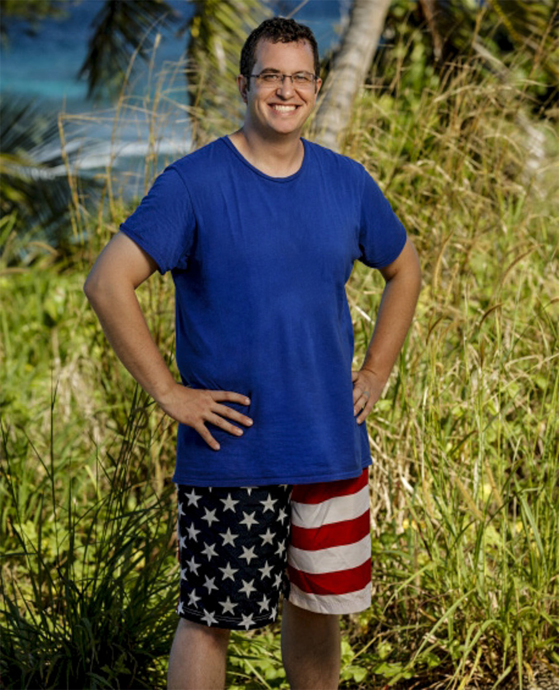
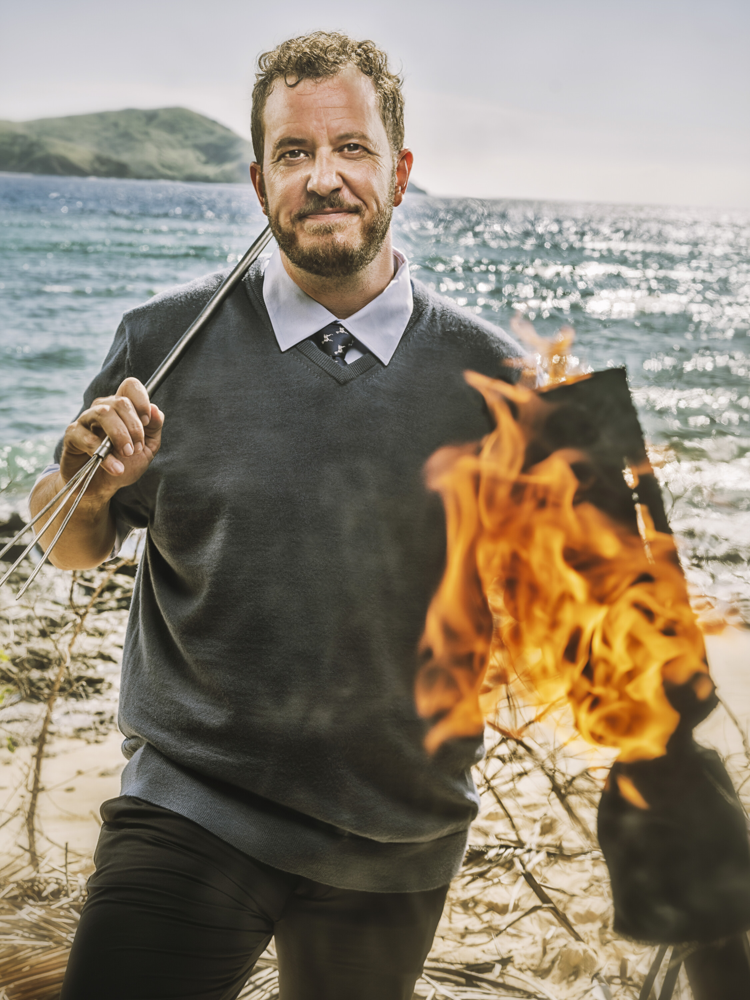

Rick Devens
Cila Tribe
Age
41
Hometown
Blacksburg, VA
Residence
Macon, GA
Occupation
Director of Communications
Previous Season
38 (Edge of Extinction) — 4th
Status
Active

Season 38 (Edge of Extinction)

Season 50
About
Rick Devens is one of the most beloved players from the Edge of Extinction era. After being voted out pre-merge, he returned from the Edge and put together an extraordinary run of immunity wins, idol finds, and Tribal Council theatrics on his way to a 4th-place finish. He was initially cast as an alternate for Season 50 but was added to the final cast when a spot opened up.